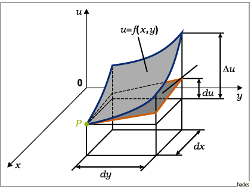
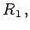
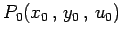

Geometrische Bedeutung des vollständigen Differentials
Die geometrische Bedeutung des vollständigen Differentials einer Funktion von zwei Veränderlichen u = f(x,y), die in einem kartesischen Koordinatensystem als Fläche dargestellt werden kann (obere Fläche durch den Punkt P in der Abbildung), besteht darin, daß du gleich dem Zuwachs der Applikate der Tangentialebene (untere Fläche durch den betrachteten Punkt) ist, wenn dx und dy die Inkremente von x und y sind. Mit  ist der Zuwachs der Applikate der Fläche für die Inkremente dx und dy von x und y bezeichnet.
ist der Zuwachs der Applikate der Fläche für die Inkremente dx und dy von x und y bezeichnet.

Aus der TAYLORschen Formel folgt für Funktionen von zwei Variablen
Vernachlässigt man das Restglied  dann stellt
die Gleichung der Tangentialebene an die Fläche u = f(x,y) im Punkt  dar.